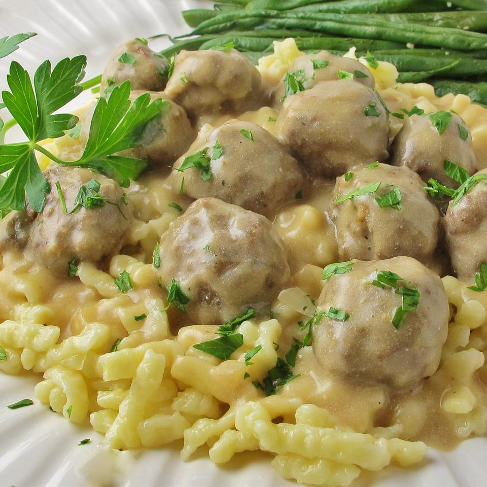

Mhhhh...Kottbullar!

Description
Feeling like trying something nordic?
Then try this Kottbullar-recipe!
Ingredients
- 2 slices day-old white bread, crumbled
- ½ cup heavy cream
- 1 teaspoon butter
- 1 small onion, minced
- ⅔ pound ground beef
- ⅓ pound finely ground pork
- 1 egg
- 1 teaspoon salt
- ¼ teaspoon ground black pepper
- ¼ teaspoon ground nutmeg
- ¼ teaspoon ground allspice
- 1 tablespoon butter
- ¼ cup chicken broth
- 3 tablespoons all-purpose flour, or as needed
- 2 cups beef broth, or as needed
- ½ (8 ounce) container sour cream
- 1 tablespoon brown sugar (Optional)
- ⅛ teaspoon ground ginger (Optional)/li>
-
Preheat oven to 350 degrees F (175 degrees C).
-
Place the bread crumbs into a small bowl, and
mix in the cream. Allow to stand until crumbs
absorb the cream, about 10 minutes. While the bread
is soaking, melt 1 teaspoon of butter in a skillet
over medium heat, and cook and stir the onion until
it turns light brown, about 10 minutes. Place onion
into a mixing bowl; mix with the ground beef,
ground pork, egg, brown sugar, salt, black pepper,
nutmeg, allspice, and ginger. Lightly mix in the
bread crumbs and cream.
-
Melt 1 tablespoon of butter in a large skillet over
medium heat. Pinch off about 1 1/2 tablespoon of
the meat mixture per meatball, and form into balls.
Place the meatballs into the skillet, and cook just
until the outsides are brown, about 5 minutes,
turning the meatballs often. Insides of the meatballs
will still be pink. Place browned meatballs into a
baking dish, pour in chicken broth, and cover with foil.
-
Bake in the preheated oven until the meatballs are tender,
about 40 minutes. Remove meatballs to a serving dish.
-
To make brown gravy, pour pan drippings into a saucepan
over medium heat. Whisk the flour into the pan drippings
until smooth, and gradually whisk in enough beef broth to
total about 2 1/2 cups of liquid. Bring the gravy to a simmer,
whisking constantly until thick, about 5 minutes.
Just before serving, whisk in the sour cream.
Season to taste with salt and black pepper.
Serve the gravy with the meatballs.